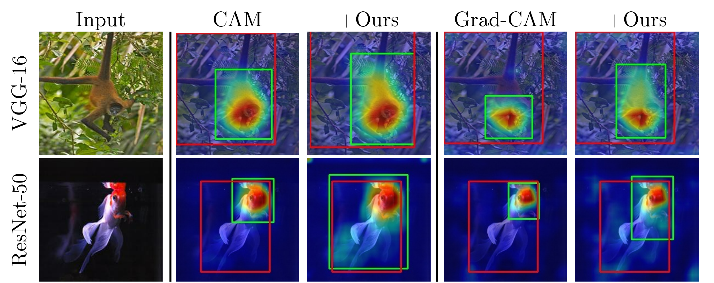
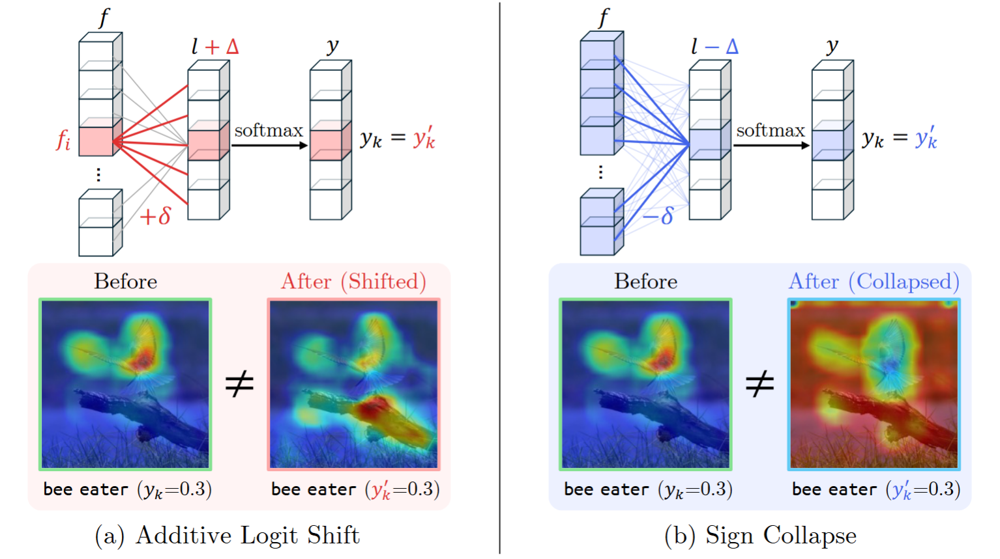
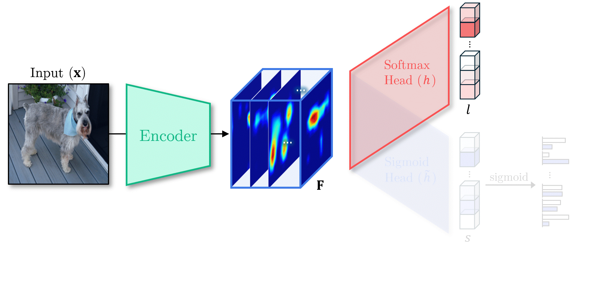
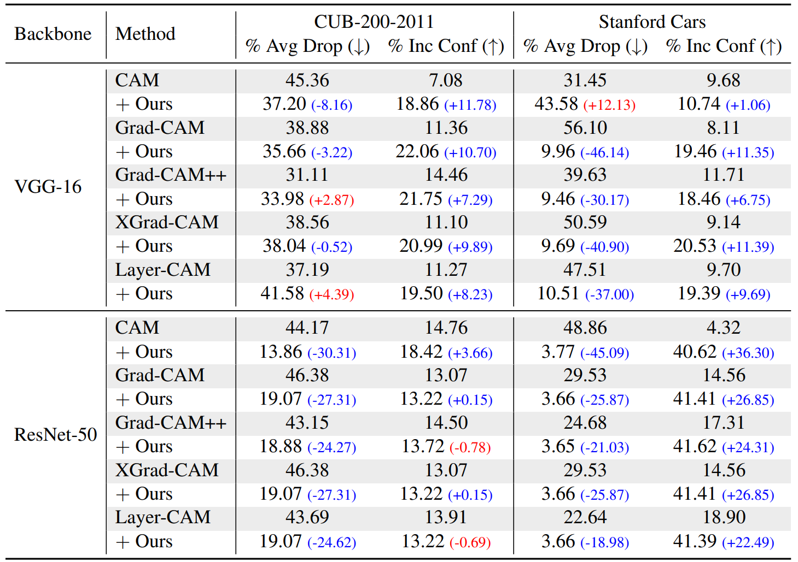
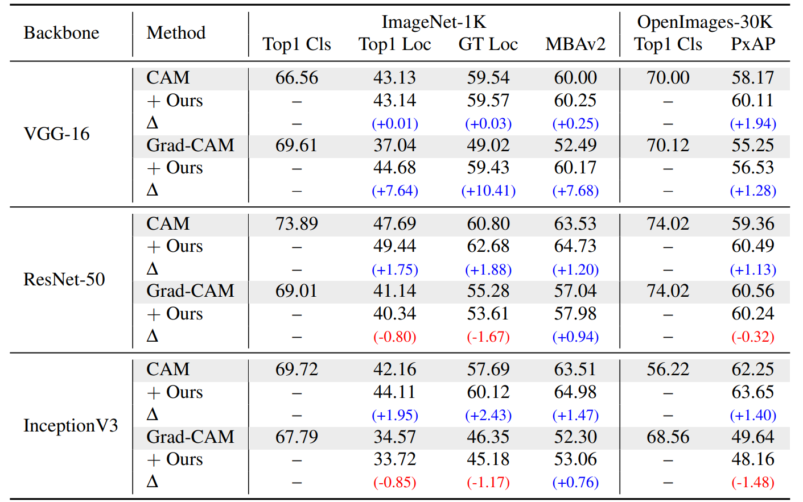
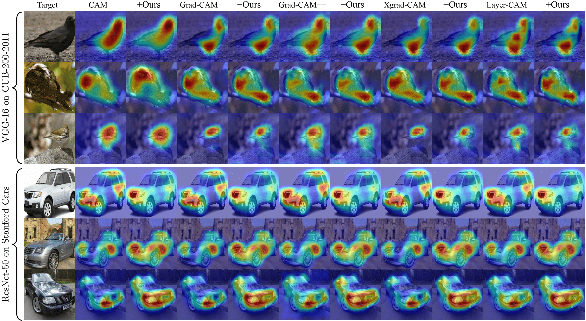
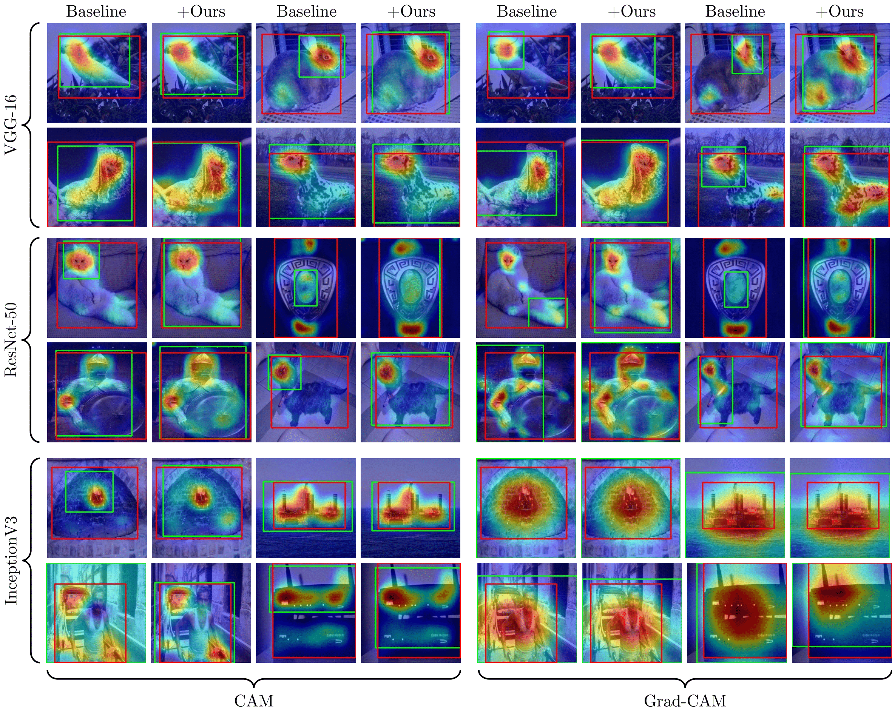

Class Activation Mapping (CAM) and its extensions have become indispensable tools for visualizing the evidence behind deep network predictions. However, by relying on a final softmax classifier, these methods suffer from two fundamental distortions: additive logit shifts that arbitrarily bias importance scores, and sign collapse that conflates excitatory and inhibitory features.
We propose a simple, architecture-agnostic dual-branch sigmoid head that
decouples localization from classification. Given any pretrained model, we clone
its classification head into a parallel branch ending in perclass sigmoid outputs,
freeze the original softmax head, and fine-tune only the sigmoid branch with
class-balanced binary supervision. At inference, softmax retains recognition accuracy,
while class evidence maps are generated from the sigmoid branch — preserving both magnitude
and sign of feature contributions. Our method integrates seamlessly with most CAM variants
and incurs negligible overhead. Extensive evaluations on fine-grained tasks (CUB-200-2011, Stanford Cars)
and WSOL benchmarks (ImageNet-1K, OpenImages-30K) show improved explanation fidelity and consistent
Top-1 Localization gains — without any drop in classification accuracy.

All CAM variants ultimately form heatmaps by linearly combining feature maps with per-channel weights.
For this linear combination to be semantically valid, the weights wi,k should satisfy two tacit requirements:
(i) relative magnitude semantics and (ii) sign semantics.
However, when weights are derived from softmax-based classifiers, softmax invariances fundamentally break these assumptions:
(a) Additive Logit Shift. Adding a constant δ to all weights connected to feature i leaves the softmax probability yk
unchanged, but arbitrarily brightens or dims feature fi's contribution in the heatmap.
(b) Sign Collapse. Subtracting a large δ flips all weight signs without affecting yk,
completely inverting the CAM contributions—previously highlighted regions now appear as suppressors, and vice versa.
In both cases, identical classification outputs produce drastically different localization maps, revealing that softmax-derived weights lack reliable semantic meaning for visualization.

To disentangle these distortions, we introduce a dual-branch sigmoid head that decouples
localization from classification.
Training. Starting from a pretrained classifier, we copy its head h into a new branch ˜h with
identical architecture, but fresh parameters. The sigmoid branch outputs class-wise scores. Here,
the original softmax head and backbone remain frozen.
Inference. After feature extraction, the frozen softmax head predicts the class label k*. In parallel, any CAM variant computes
per-channel importance scores w̃k* (via weights or gradients) for sk*,
which are rectified by clamping to positive values. These positive-only scores are then linearly combined with
the feature maps to produce the final class evidence heatmap M̃k*.

Fine-grained explanation fidelity on CUB-200-2011 and Stanford Cars. For % Average Drop (lower is better) and % Increase in Confidence (higher is better), improved values are shown in blue and worsened values in red; parentheses indicate the change relative to the baseline.

WSOL results on ImageNet-1K and OpenImages-30K. For each base method we shade the baseline row in gray; “+ Ours” rows report updated scores with their Δ shown in parentheses (blue for gains, red for drops).

Additional qualitative explanation examples on fine-grained datasets: VGG-16 on CUB-200-2011 (top) and ResNet-50 on Stanford Cars (bottom).

Additional qualitative WSOL examples on ImageNet-1K using VGG-16 (top), ResNet-50 (middle), and InceptionV3 (bottom). Predicted bounding boxes are shown in green, and ground-truth boxes in red.
@inproceedings{Oh_2025_BMVC,
author = {Yoojin Oh and Junhyug Noh},
title = {Beyond Softmax: Dual-Branch Sigmoid Architecture for Accurate Class Activation Maps},
booktitle = {36th British Machine Vision Conference 2025, {BMVC} 2025, Sheffield, UK, November 24-27, 2025},
publisher = {BMVA},
year = {2025},
url = {https://bmva-archive.org.uk/bmvc/2025/assets/papers/Paper_416/paper.pdf}
}